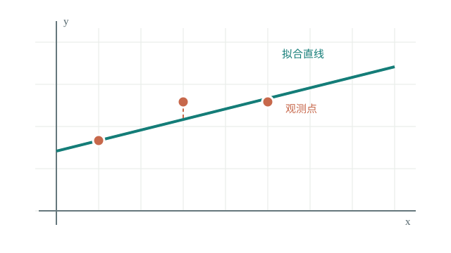

正交投影与最小二乘
当数据不可能被一条直线完全穿过时，应该怎样定义“最佳拟合”？答案不是凭眼睛挑一条线，而是把目标向量正交投影到列空间，让残差平方和达到最小。
先提出问题：方程组没有精确解时，怎样找到最好的近似？
观测数据常常彼此不完全一致，因此不存在一条直线能精确穿过所有点。我们需要一种可计算、可证明的“最接近”定义。
最小二乘把“最接近”定义为残差向量长度最小。几何上，这相当于把 b 投影到矩阵 A 的列空间。
先看图形：从数据点到拟合直线

几何直觉把所有可由 Ax 得到的向量放在列空间 Col(A) 中。b 不一定在这个空间里；最优解 Ax̂ 是离 b 最近的那个点。最近点的连线必须垂直于整个列空间。
建立数学语言：内积、投影与正交
1. 点积测量方向关系
在 Rⁿ 中，点积定义为：
若 u·v=0，则两个向量正交。对于非零向量 a，把 b 投影到 a 的方向：
式 1
投影误差 r=b−projₐb 与 a 正交。它是从 b 到直线 span{a} 的最短连线。
2. 从投影到最小二乘
对于 A∈Rᵐˣⁿ 和 b∈Rᵐ，寻找 x̂ 使残差平方和最小：
最优残差 r=b−Ax̂ 必须与 A 的每一列正交，所以 Aᵀr=0。整理得到正规方程：
定理 1
推导与例题：拟合三个点的一条直线
给定数据点 (0,1)、(1,2)、(2,2)，用 y=c+mx 拟合。把未知参数写成 x=(c,m)ᵀ：
计算正规方程中的两个矩阵：
因此 3c+3m=5、3c+5m=6。两式相减得 2m=1，所以 m=1/2，再代回得到 c=7/6。拟合直线为：
预测值为 (7/6, 5/3, 13/6)，残差 b−A x̂ 为 (−1/6, 1/3, −1/6)。
交叉验证：残差必须正交残差分量之和为 −1/6+1/3−1/6=0；与第二列 (0,1,2) 的点积为 1/3−2/6=0。因此 Aᵀr=0，满足正规方程的几何最优条件。这里 A 的两列线性无关，所以最小二乘解唯一。
3. Gram–Schmidt：把一般基变成正交基
对线性无关向量组，先保留第一个方向，再从后续向量中减去在已构造方向上的投影，得到彼此正交的向量。两个向量时：
交互实验：改变投影位置
固定 b 的终点，拖动投影系数 c，观察投影向量与残差的变化。最短距离发生在残差垂直于投影方向时。
正交投影实验室
投影系数 c = 1.00
边界与易错点
- 最小二乘不一定给出 Ax=b 的精确解。 它给出使残差范数最小的解。
- 正规方程的几何条件是残差正交。 不要只背矩阵公式。
- AᵀA 可逆需要 A 的列线性无关。 列相关时最小二乘解可能不唯一；可使用伪逆或 QR/SVD 方法。
- 数值计算通常不优先显式求逆。 QR 或 SVD 往往比直接形成 AᵀA 更稳定，尤其在病态问题中。
自测：判断投影与残差
题目：a=(1,1)，b=(2,0)，projₐb 是多少？
a·b=2，a·a=2，所以投影系数为 1，projₐb=(1,1)。残差 b−proj=(1,−1)，与 a 点积为 0。
题目：为什么最小二乘残差与 A 的每一列正交？
如果残差在某列方向上还有非零分量，就可以沿该方向微调参数，进一步减小误差。最优点处所有列方向的一阶变化都为零，即 Aᵀ(b−Ax̂)=0。